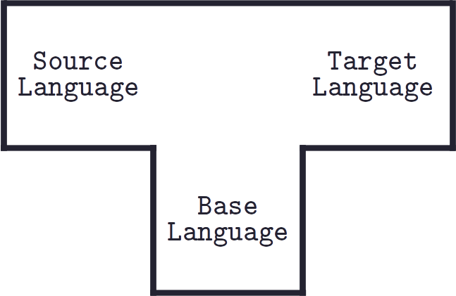
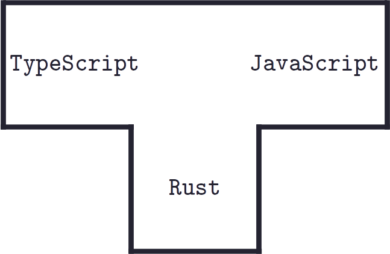
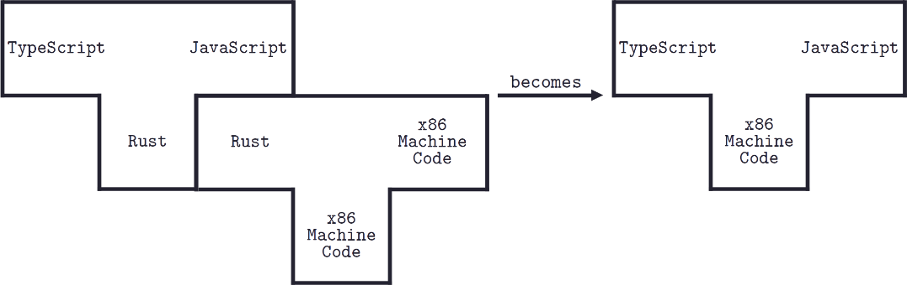
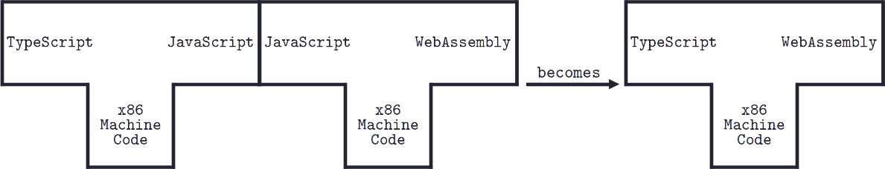
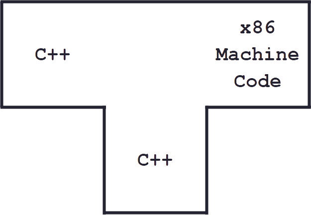
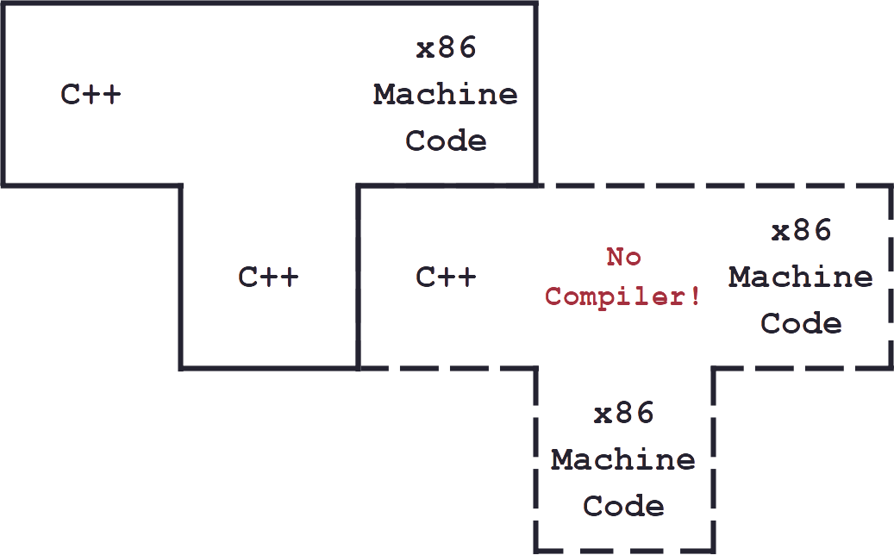
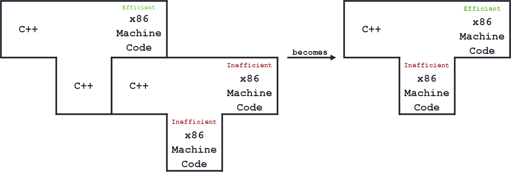
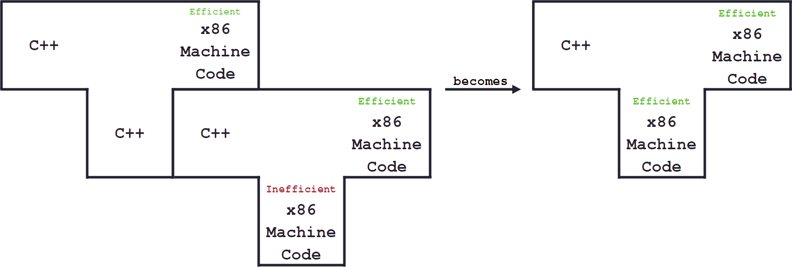
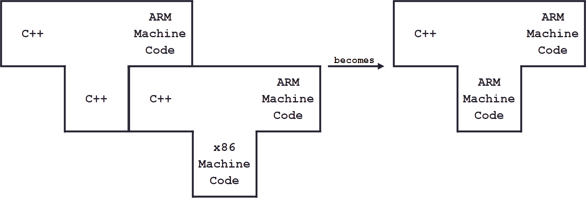

Compilers 101
The meaning of life
If hardware were flesh and bones, programs would be mind and soul. Therefore, software gives life to hardware. But what do the programs actually look like?
They are simply a series of ones and zeros in the computer's memory, representing a sequence of instructions. For example, the following binary sequence could be an instruction to move data to a register:
However, this format is difficult for humans to understand. Moreover, computer instructions are limited to basic tasks like adding numbers or storing values in memory. And there is no direct instruction to draw a circle on the screen or send files over the network. To simplify the creation of software, programming languages were invented.
Programming Languages
Programming languages help to describe algorithms in a human-friendly form. They eliminate the flaws of direct programming in machine code. First, they define operations at a higher level of abstraction. For example, the majority of languages support procedure definitions.
A procedure is a named sequence of instructions that perform a more complicated task than individual instructions. For instance, one can define a procedure that counts from 0 up to any number:
And then, one can use this procedure as a basic operation without caring about its internals:
In addition, programming languages abstract away from the differences between hardware architectures. They aim to be platform independent. Once you have written an algorithm in the programming language, it can be run on different types of hardware. This allows you to fully focus on the software implementation without worrying about the number of registers or stack allocation.
All right, it's fine and dandy, but there's one detail missing: computers don't underestand our fictional programming languages.
Compilers to the rescue
Someone has to convert programs written in a programming language into machine code. This task can be done by another program called a compiler. The compiler takes a text file written in the programming language and translates it into a binary file consisting of machine codes.
The compilation process involves a number of stages that gradually transform the program into a more machine-readable format. Almost all compilers perform these steps:
- Lexical analysis
- Syntax analysis
- Semantic analysis
- Code optimization
- Code generation
Lexical analysis
The lexical analysis component is sometimes called a scanner. During this step, the compiler reads characters from the source text one by one and groups them into tokens. It skips whitespaces and comments because these have no meaning in the rest of the compilation process. The sequence of tokens then proceeds to the syntax analysis phase.
A token is usually represented by a number. For example, each time the scanner encounters the word 'while', it may return the number '7'. Similarly, when reading the left brace '{', it may produce the number '9'. The specific value of these numbers is not critical, as long as they remain consistent for each token type.
The purpose of this step is to simplify input for the rest of the compiler. Manipulating token numbers is easier than handling variable-length strings.
Syntax analysis
The syntax analysis part can be referred to as a parser. This step matches the actual token sequence with syntax rules and groups them accordingly. While doing this, the parser also finds syntax errors and outputs them for users to correct.
A language may have a syntax rule for expressions. This rule may define expressions as two numbers followed by an operator:
So, the parser must somehow mark two consecutive numbers and an operator as part of the 'expression' rule. For example, the parser could encounter the following token sequence:
In this case, it would group the tokens '9' '3' '+' as part of the 'expression':
Parsers usually use tree data structures to group tokens, and then pass the grouped tokens to the semantic analysis step.
Semantic analysis
The semantic analysis stage checks the meaning of the program. It inspects declarations and ensures type consistency. For example, a program may declare a string variable and try to use it in an arithmetic expression, which is meaningless:
If the program passes this stage, the compiler will move on to the optimization phase.
Code optimization
The compiler can sometimes optimize source code without changing its intended logic. There are many robust optimization techniques available. For example, one of the simplest optimizations is constant folding. It precalculates expressions whose operands are known at compile time:
Code generation
During this stage, the compiler finally outputs code for a target machine. The target machine can be real hardware or some abstraction like another compiler that accepts the generated code as a source program.
Sometimes, the code generation does not complete the compilation process. Target code optimization steps may occur that output more compact or faster code variants.
T-Diagrams
Compilers are depicted graphically using T-diagrams. The T-diagram looks like this:
The base language is the programming language in which the compiler is written.
Let's take a look at a real-world example: a Rust-based translator that converts TypeScript source code into JavaScript. The T-diagram for this is as follows:
But the computer does not understand Rust source code. Therefore, another compiler converts the Rust-based translator into executable machine code. After that, the Rust-based translator becomes machine-code-based, which means it runs directly on the computer:
Also, a compilation output can serve as input for another compiler. In the context of our example, a Rust-based compiler uses previously generated JavaScript code to produce WebAssembly:
T-diagrams help to understand cross-compilation and the bootstrapping process, which are widely used by language implementors.
Bootstrapping
It is common to implement a compiler using the same language it compiles:
This kind of compiler is called self-compiling. The optimizations made in them improve not only the programs they output, but also the compilers themselves.
However, it is a chicken-and-egg situation. At the start, the compiler does not exist, and the 'new' language can't be compiled:
So, the first unoptimized and cut version of the compiler is written in another 'old' language. It may output extremely inefficient code, but its sole purpose is to produce the full compiler written in its own 'new' source language:
The full but inefficient compiler outputs efficient code. So, it is used to produce the full and efficient final version of the compiler:
The full process mentioned before is called compiler bootstrapping.
Compiler retargeting
The self-compiling compiler can be easily retargeted to run on a different computer architecture. Firstly, the code generation part must be rewritten and recompiled. This results in a cross-compiler that runs on the original machine, but outputs code for another machine:
Lastly, the cross-compiler compiles itself to produce a compiler that runs on another machine:
